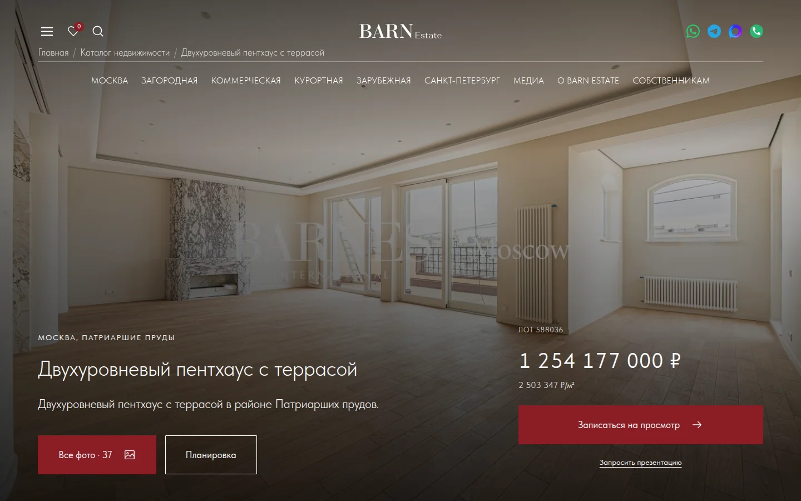
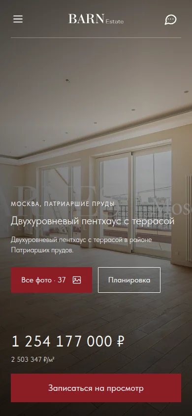
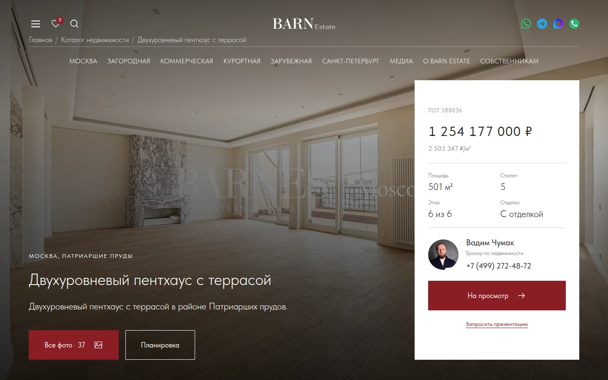
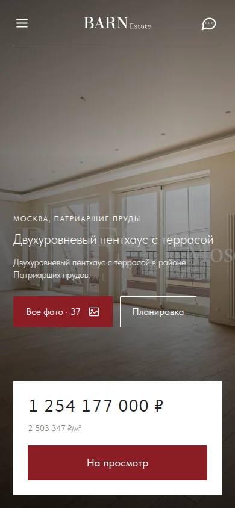
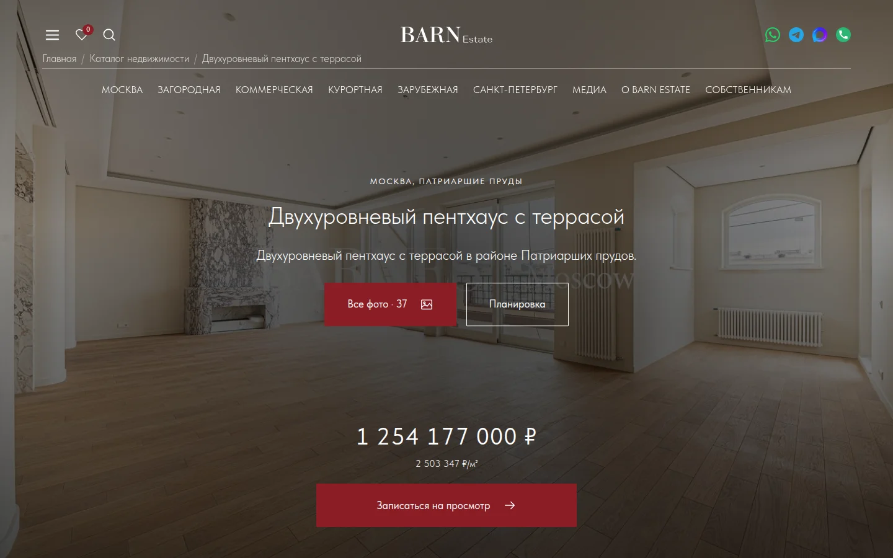
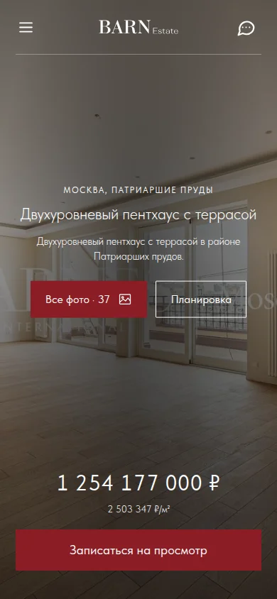
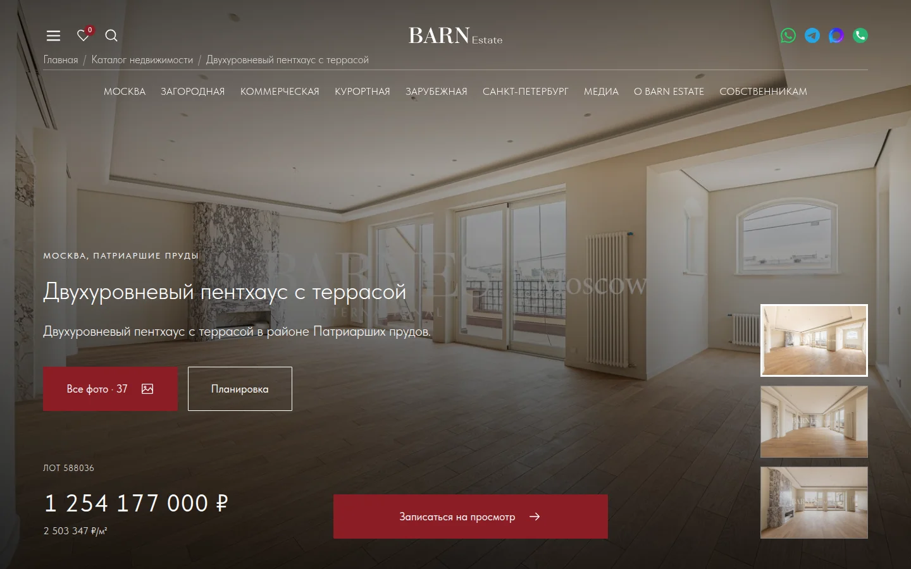
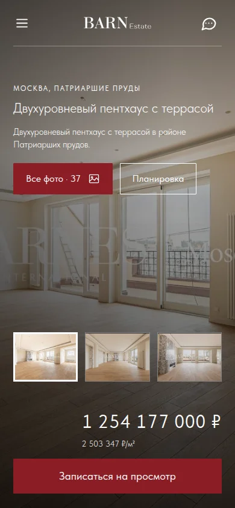

Вариант 01
РекомендуюТекст поверх фотографии


Название и описание слева, цена и запись справа. Максимум фотографии и минимум отдельных панелей.
Спокойный и универсальный вариант.
Открыть вариант 1Страница лота · выбор первого экрана
Во всех вариантах фотография занимает весь первый экран. Меняется расположение названия, стоимости и действий. Шрифты, цвета и кнопки — из нашего UI-кита.
Вариант 01
Рекомендую

Название и описание слева, цена и запись справа. Максимум фотографии и минимум отдельных панелей.
Спокойный и универсальный вариант.
Открыть вариант 1Вариант 02


Фотография продолжается за карточкой с ценой, параметрами и брокером. На телефоне карточка становится компактной.
Самый привычный сценарий выбора объекта.
Открыть вариант 2Вариант 03


Название, описание и кнопки опущены вниз, прямо над полосой с ценой, параметрами и записью.
Верхняя часть фотографии остаётся свободной.
Открыть вариант 3Вариант 04


Название, описание и галерея собраны по центральной оси. Цена и просмотр — ниже, на той же оси.
Подходит для акцентного архитектурного или интерьерного кадра.
Открыть вариант 4Вариант 05


Полноэкранная фотография с тремя миниатюрами для переключения. Название и стоимость остаются поверх изображения.
Позволяет начать изучение квартиры прямо с первого экрана.
Открыть вариант 5